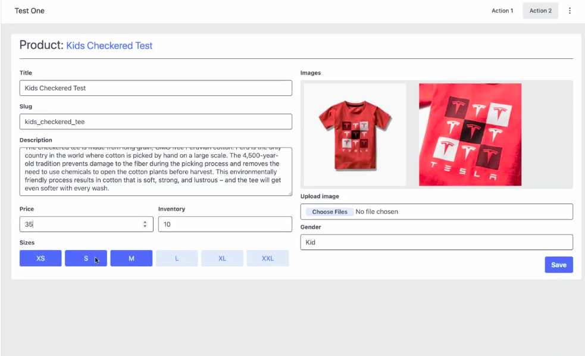
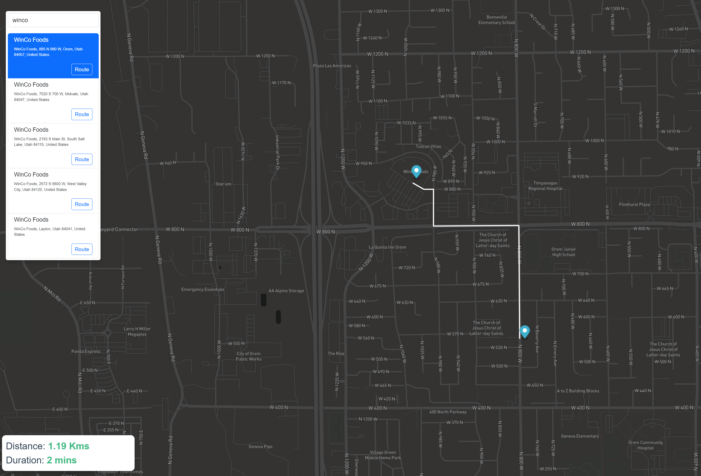

Ingeniero de Software con más de 6 años de experiencia enfocado en el Desarrollo Orientado a Productos. Habiendo trabajado en los EE. UU. y siendo trilingüe, aporto una perspectiva multicultural y una experiencia diversa. Apasionado por convertir ideas en productos y servicios, no solo en código.
Experiencia laboral
Frontend y liderazgo técnico
Enfocado en FrontEnd: nuevas funcionalidades, mantenimiento y corrección de bugs. Lideré la migración de una base de código de Angular y CoffeeScript a Vue y JavaScript, aplicando estándares rigurosos para todo el equipo. Uso habitual: Vue/Vuex, JavaScript, SCSS; también BackEnd con NestJS, TypeORM y TypeScript. He participado en decisiones de arquitectura, definido estándares de código a nivel departamento y mentorizado a desarrolladores junior.
Estudios
Graduado en Ingeniería de Software de la Universidad Brigham Young en Estados Unidos. También he completado más de 20 certificaciones y/o cursos luego de graduarme.
Algunos de mis proyectos

Panel administrativo e-commerce
PoC de panel de administración para una plataforma e-commerce. Vue 3, Pinia, TanStack Query y Tailwind. Incluye autenticación, CRUD de productos con subida de imágenes, paginación y notificaciones. Clean Architecture.

App de mapas
Aplicación de mapas con Vue 3, Vuex y TypeScript. Búsqueda y visualización de rutas en mapa. Desarrollada con enfoque OOP.
¡Conoce más sobre mí!
¡Hablemos de código, diseño y más!